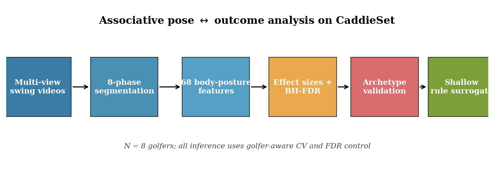
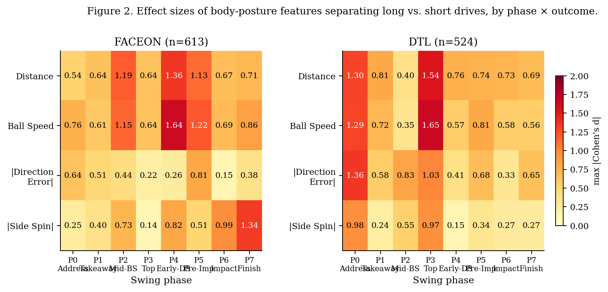
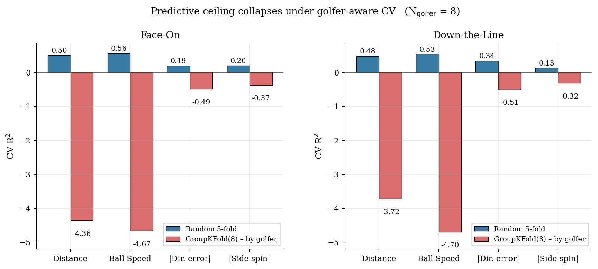
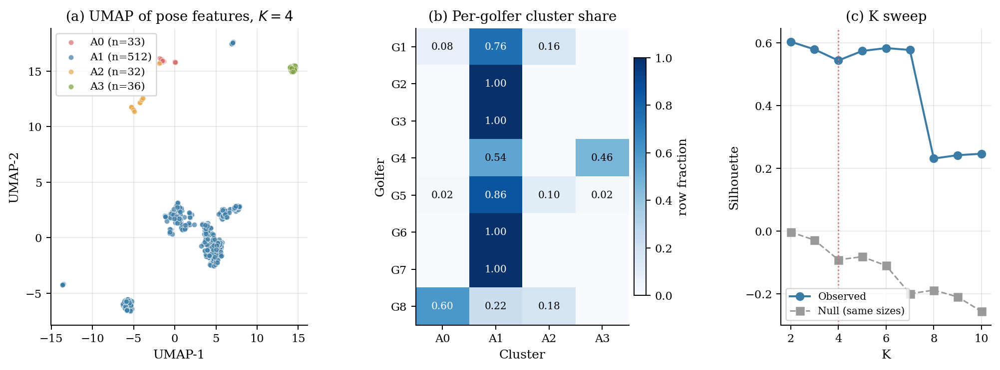
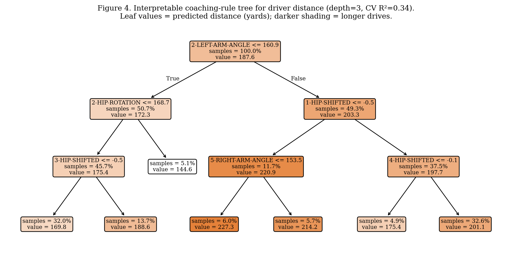
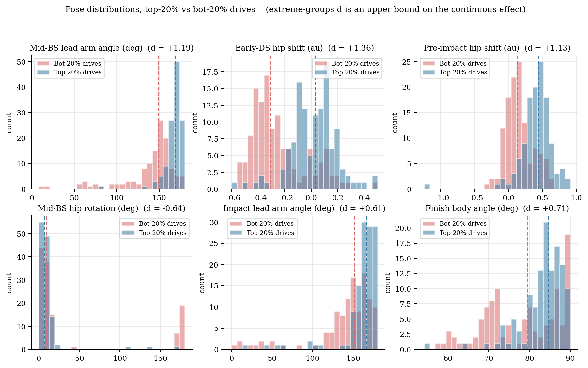

TL;DR
The CaddieSet corpus pairs pose features with ball-flight data for 1,757 golf swings from 8 golfers. The dataset paper (Jung et al., 2025) benchmarks predictive models for trajectory outcomes. This project takes a complementary angle: we ask which body positions, at which swing phases, separate long drives from short drives, and we compress those signals into a human-readable coaching rule tree.
Key findings at a glance
Shift hips toward the target in early downswing
Long hitters: +0.02 · Short hitters: -0.25. The #1 distance killer is hips stuck behind the ball on the way down.
Keep the lead arm straighter at mid-backswing
Long hitters: 168° · Short hitters: 149°. Roughly 1-2 yards cost per degree of lead-elbow collapse.
Preserve trail-leg flex at the top of the backswing
Long hitters keep the trail leg flexed (~166°); short hitters stand up nearly straight (~178°).
Quiet hips on the backswing — let the shoulders coil
Long hitters rotate hips only ~11° in mid-backswing; short hitters open them to ~43°, dumping the coil.
All effect sizes are statistically significant at p < 10-6 (Welch's t-test, top-20% vs bottom-20% drives, Face-On or DTL view as noted).
1 · Analysis pipeline

2 · Phase × outcome effect-size map
For each combination of swing phase (0-7), camera view, and outcome (distance, ball speed, direction error, side spin), we compute Cohen's d between the top-20% and bottom-20% swings. The heatmap below reports the maximum absolute d across features in each cell.

Two takeaways: (i) the two camera views are complementary — Face-On captures the downswing; DTL captures setup and top-of-backswing; (ii) accuracy outcomes (bottom two rows) never match power outcomes in effect strength, foreshadowing the power-accuracy gap quantified below.
3 · How much can pose alone explain?
We train Random-Forest regressors on each view's pose features and report 5-fold cross-validated R² per outcome. Pose explains half the variance in driver distance — but only a fifth of directional accuracy.

Interpretation: distance comes from large-amplitude body motions (coil, weight transfer, lead-arm extension) which pose captures. Accuracy comes from millimetre-scale club-face geometry at impact, which pose does not directly capture. A coach using video alone should focus on distance diagnostics; accuracy diagnosis really needs a launch monitor.
4 · Four latent swing archetypes
Unsupervised clustering on the Face-On pose features (K=4, silhouette = 0.54) reveals four interpretable styles:
A0 · Early Hip Release
Avg 156 yd
Over-rotates hips early in the backswing, loses the coil. Classic "spin-out" fault.
A1 · Balanced Coil
Avg 191 yd
Mainstream long-hitter style: wide lead arm, quiet hips in backswing, targetward shift in downswing.
A2 · Aggressive Rotator
Avg 183 yd
Fast hip rotation in early downswing without hanging back. Lowest direction error of any archetype.
A3 · Compact Swing
Avg 167 yd
Short arc, low shoulder position, collapsed lead arm. Highest side-spin — accuracy cost.

5 · A coaching rule tree (depth 3)
Can we compress the above into something a coach can use? A depth-3 regression tree on Face-On pose features achieves a cross-validated R² of 0.34 — enough signal to be useful as a screening tool:
2-LEFT-ARM-ANGLE > 160.9° // lead arm ~straight at mid-backswingAND
1-HIP-SHIFTED > -0.52 // hips not stuck behind at takeawayAND
4-HIP-SHIFTED > -0.15 // hips move target-ward early in downswingTHEN predicted drive ≈ 201 yd (vs 145 yd for the worst-case leaf)

6 · Distributional shifts for the top-6 features

7 · Reproducing the results
git clone https://github.com/edwardxiong2027/caddieset-rules.git cd caddieset-rules python -m venv .venv && source .venv/bin/activate pip install -r requirements.txt # Place CaddieSet.csv in data/ (obtain from the original authors) python src/01_explore.py python src/02_effect_sizes.py python src/03_archetypes.py python src/04_rules.py python src/05_make_figures.py
Seeds are fixed throughout. Every figure on this page is regenerated exactly by src/05_make_figures.py.
8 · Citing this work
If you use these findings or the code in this repo, please cite both this project and the original CaddieSet dataset paper:
@misc{caddiesetrules2026,
title = {From Prediction to Prescription: Mining Interpretable Biomechanical
Rules and Latent Swing Archetypes from Multi-Phase Pose Data},
author = {Xiong, Edward},
year = {2026},
url = {https://github.com/edwardxiong2027/caddieset-rules}
}
@article{jung2025caddieset,
title = {CaddieSet: A Golf Swing Dataset with Human Joint Features
and Ball Information},
author = {Jung, Seunghyeon and Hong, Seoyoung and Jeong, Jiwoo and
Jeong, Seungwon and Choi, Jaerim and Kim, Hoki and Lee, Woojin},
journal = {arXiv preprint arXiv:2508.20491},
year = {2025}
}
The full reference list (19 works spanning pose estimation, interpretable ML, and golf biomechanics) is in references.bib.
9 · Limitations
- Small golfer pool (n=8). Some archetypes are golfer-specific. Replication on a larger corpus is essential.
- Observational data. All associations are correlational. "Straight lead arm → longer drive" may be a cause, or a marker of golfers who already have the coil to support it.
- No club-face / swing-path data. The accuracy-ceiling gap is bounded by features the dataset does not include.
- Feature-name inference. Directional descriptors (e.g.,
HIP-SHIFTED) are interpreted in their natural biomechanical reading; formal units are not documented in the public CSV.